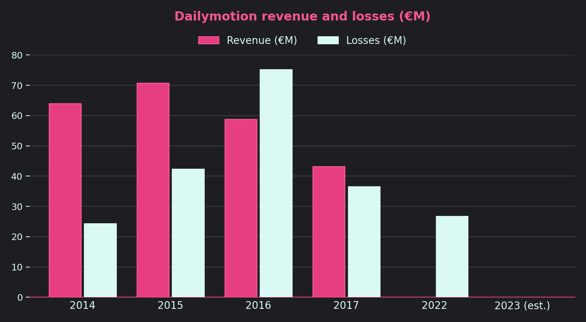
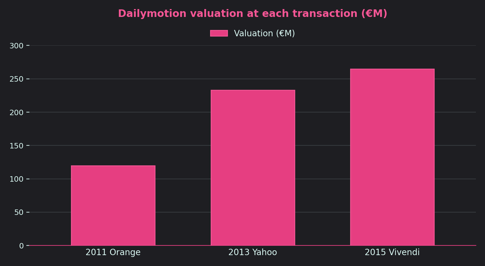
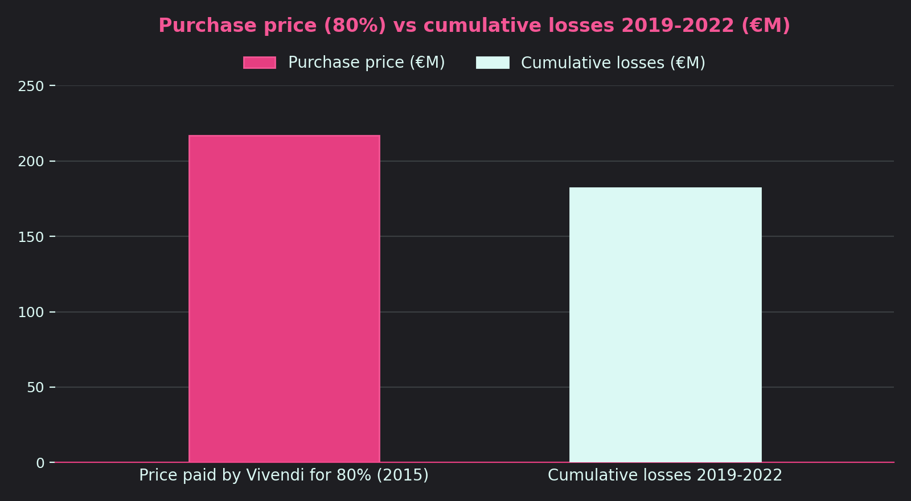

Until 2015, Dailymotion grew quickly: its revenue had been rising by more than 30% a year since 2012, driven by a fast-growing global audience. After Vivendi bought it in 2015, the platform changed strategy: it removed pirated, violent and adult content, tracked down bot-generated traffic and refocused on premium, editorialised content. This clean-up made the audience drop (from 148 million unique visitors in mid-2015 to 77 million at the end of 2017), and with it advertising revenue. On top of that came overwhelming competition from YouTube and Facebook, and a difficult transition after the change of management: a large part of the team left the company. Losses grew because the costs of this relaunch kept coming while revenue was shrinking. In the following period, Dailymotion continued its shift towards partnerships with media publishers (the B2B model), which explains why losses stayed high before gradually falling.
In 2011, Orange bought 49% of Dailymotion for about €62M, valuing the company at about €120M. The aim was to meet growing demand for mobile video, when Dailymotion was still a start-up. In 2013, Yahoo prepared an offer for 75% of the company, based on a valuation of about $300 million. The offer never went through: the French government opposed it because it did not want a US group to control one of the country's best start-ups. In 2015, Vivendi paid €217M for 80%, a valuation of €265M. The price reflects the growth in revenue (€64M in 2014), an audience of several billion video views a month, and Vivendi's strategy of refocusing on media and content. The government, which had already blocked Yahoo and made the Hong Kong group PCCW withdraw, favoured a European solution, which limited competition between foreign buyers.


Vivendi bought Dailymotion in 2015 with the ambition of making it the distribution platform for all its content (Canal+, Universal, etc.) and a global competitor to YouTube. The project did not deliver the expected results: the audience fell, so did revenue, and Dailymotion kept losing money. Vivendi even had to write down the value of its subsidiary in its accounts (€68M for 2019 alone), proof that the company was worth less than expected. Cumulative losses over 2019-2022, about €182M, therefore represent more than 80% of the price paid in 2015 (about €217M): Vivendi has funded the platform's recovery without, so far, getting the profitability it hoped for.